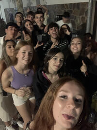

Trabajo Paula Alonso
Caracteristicas destacables
- Trabajadora
- Optimista
- Amable
Atividades que no dejaria de hacer

Aplicaciones que uso con más frecuencia
Enlace a la página principal de TikTok
Enlace a la página principal de YouTube
Enlace a la página principal de Spotify donde se pueden encontrar
>algunas de mis canciones favoritas:
El Color del Dolor
Melting
Flashing Lights
Curriculum
| Experiencias laborales |
Referencias |
- Actriz (anuncios y serie LQSA)
- Profesora particular (Matematicas y FyQ ESO)
|